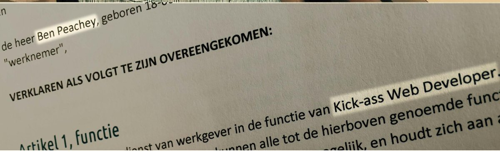
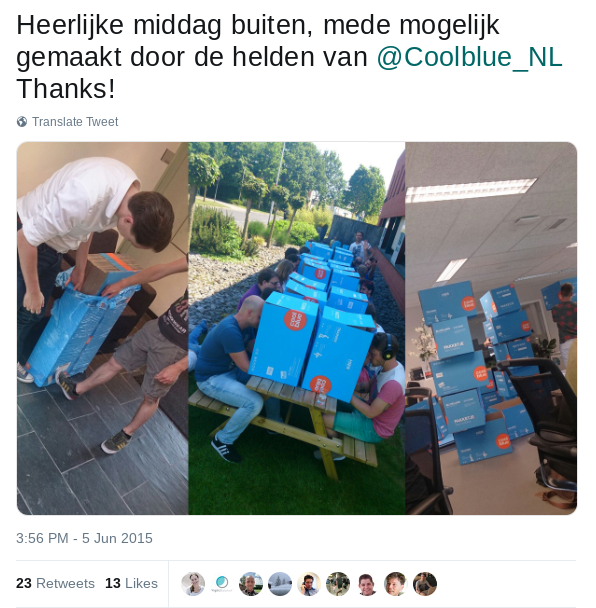
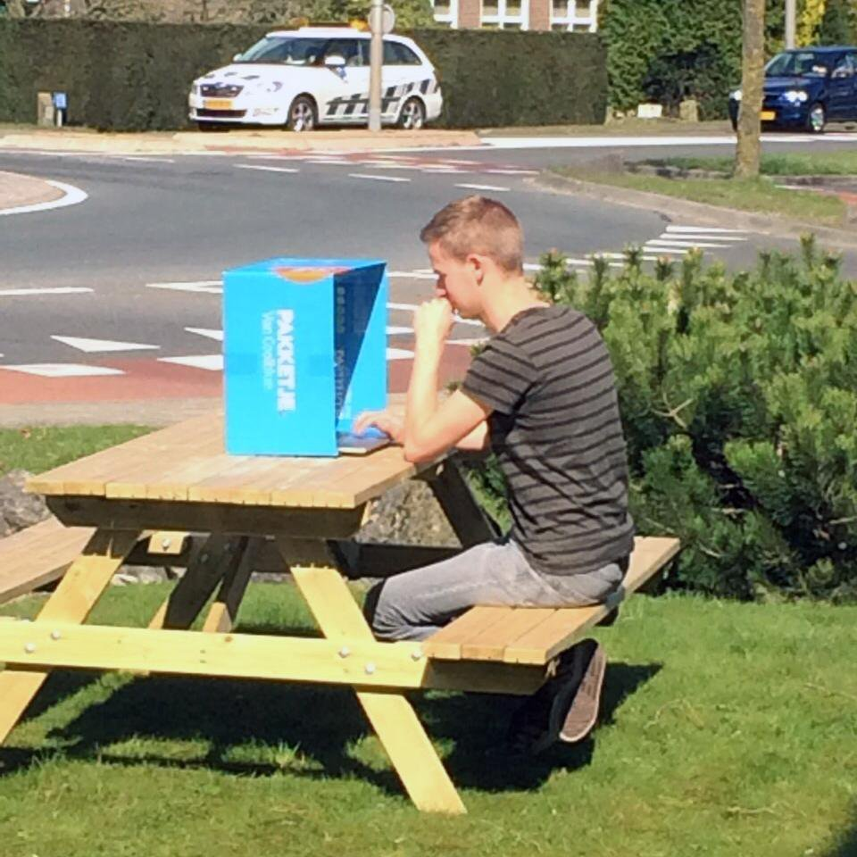
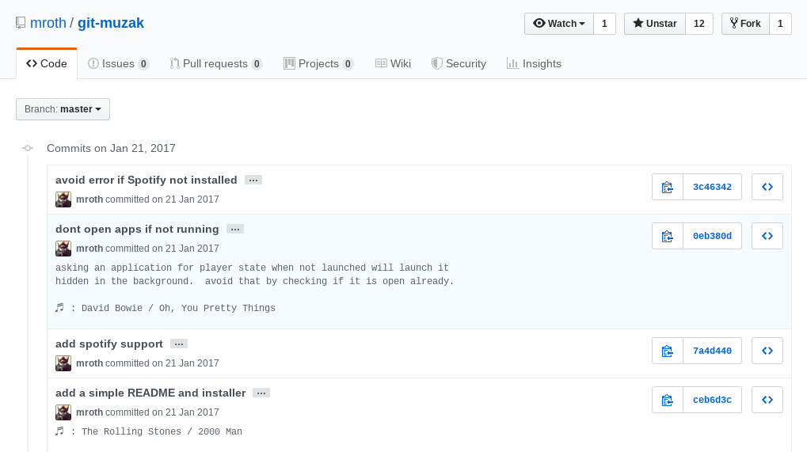
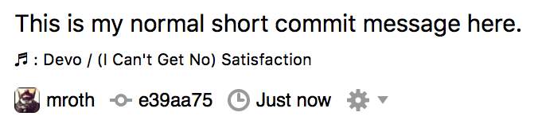

/dev/fun
Tools, techniques and tips to make your work more fun
about me
Ben Peachey
Creating software since 1985
When I was 8 years old
Job Titles
- Senior Programmer
- Senior Software Developer
- Senior Software Engineer
- Senior Web Developer
And that's just the last 10 years
Kick-ass Web Developer
Potherca
- https://twitter.com/potherca
- https://github.com/potherca
- potherca@gmail.com
- https://pother.ca
https://pother.ca/fun
Don't worry, I'll show this link again at the end of my talk
What is Fun?
 https://www.lexico.com/en/definition/fun
https://www.lexico.com/en/definition/fun
Fun is an experience often unexpected, informal or purposeless. It is an enjoyable distraction, diverting the mind and body from any serious task or contributing an extra dimension to it.https://en.wikipedia.org/wiki/Fun
Fun is... Fun!
- Amusement
- Enjoyment
- Good humour
- Light-hearted pleasure
- Playfulness
Why is fun important?
(You should already know this)


How do we have fun
(in general)
How do we have fun
(as developers)
- Adulation of One's Peers
- Creativity
- Deep Concentration ("flow")
- Getting From It What You Put Into It
- Getting stuff done
- Learning How Stuff Works
- Learning New Things
- Model Building
- Power
- Puzzle-Solving
- Seeing One's Creations Live On
Fun is personal
Different players = Different player types
Player Types
According to Bartle
- Achiever (Planner, Opportunist)
- Explorer (Scientist, Hacker)
- Socialisers (Networker, Friend)
- Killers (Politician/"Den Mothers", Griefer)
According to Marczewski
- Achiever
- Disruptor
- Free Spirit
- Philanthropist
- Player
- Socialiser
So... let people make their own fun
What is work?
Discover
Define
Develop
Deliver
Destroy
Discover, Identification of need, Concept, Learn, Study, Experiment, Research
Define, Decide, Design, Detail, Requirements, Planning
Develop, Coding, Unit/Integration Testing, Debugging, Documenting
Deliver, Software quality, Deployment, Maintenance
Deprecate, Destroy, Dispose
But... Should I have Fun at work?
YES
People who have fun are happier
Happy people
- Work harder
- Less sick leave
- More productive
Examples of Fun
I 've had
Your Milage May Vary
Celebrate
July 26, 2019
https://sysadminday.com/| Beer Day | CAPS LOCK DAY | Chocolate Day |
| Cinnamon Roll day | Coffee Day | Corndog Day |
| Day of the Nacho | Donut Day | Emoji Day |
| Hobbit Day | Mario Day | Pancake Day |
| Star Wars Day | Talk Like a Pirate Day | Tea Day |
| Towel Day | Vodka Day | Wikipedia Day |
Poke Fun at
Play Games
Word of the day
Share


Ignore the haters
every game has rules
Rules for fun in the workplace
- Fun should add value
- Fun should be optional
- Fun should be inclusive
- Fun should be safe
(NSFW)
"Good clean fun"
Not
everything is fun
Discover
Define
Develop
Deliver
Destroy
Discover
Educational Games
Ruby
https://www.bloc.io/ruby-warriorVIM
https://vim-adventures.com/CSS Selectors
http://cssdiner.comCSS Flexbox
http://flexboxfroggy.com/Swift
https://www.apple.com/swift/playgrounds/Git
https://learngitbranching.js.org/Be social
Be social
Online
- Comments
- Communities
- Platforms
- Social Media
Be social
In person
- Coding Retreats
- Conferences
- Hackathon
- Local Meetups
- Summits
Define
The Hard Choices Game
https://resources.sei.cmu.edu/library/asset-view.cfm?assetID=28919"Dice of Debt" Game
Agile Games And Exercises
Google it, yo.
?
Develop
git-smb
Play sounds effects on common git commands
- Command & Conquer
- Duke Nukem
- Super Mario Bros (NES)
- Zelda (NES)
- ...
Git Muzak


https://github.com/mroth/git-muzak
Test Driven Development
Nyan Cat Test Runner

| Github Repository | |
|---|---|
| JS - Karma | dgarlitt/karma-nyan-reporter |
| JS - Mocha | https://mochajs.org/#nyan |
| PHP | whatthejeff/nyancat-phpunit-resultprinter |
| Python | Gr1N/rainbowrunners |
| Ruby - minitest | tgxworld/minitest-nyan-cat |
| Ruby - RSpec | mattsears/nyan-cat-formatter |
Deliver
Siren of Shame
- The Big Siren
- 50 LED's
- Extra large speaker
- Eight full inches of shame (20cm)
Other peoples code
https://codepen.io/2018/popular/pens/Share your code
Share your code
Repositories
- BitBucket
- Github
- Gitlab
Share your code
Snippets
- Codepen
- Gists
- IdeOne
- JsFiddle
- Pastebin
Share your code
Live Examples
- bl.ocks.org
- Codepen
- Dablet
- IdeOne
- JsFiddle
Destroy
Early Warning System
https://github.com/geckoboard/lightbuildChaos Monkey
Chaos Monkey randomly terminates virtual machine instances and containers that run inside of your production environment. Exposing engineers to failures more frequently incentivizes them to build resilient services.https://github.com/Netflix/chaosmonkey
mindset
Accept |
existing things that should not be fun |
|---|---|
Add |
new things that are fun |
Reduce |
existing things that are not fun |
Improve |
existing things that could be more fun |
Sources:
-
Slideshow made with reveal.js
- reveal-badges plugin
- reveal-elapsed-time-bar plugin
- Question icon by Krisada from The Noun Project licensed under Creative Commons Attribution